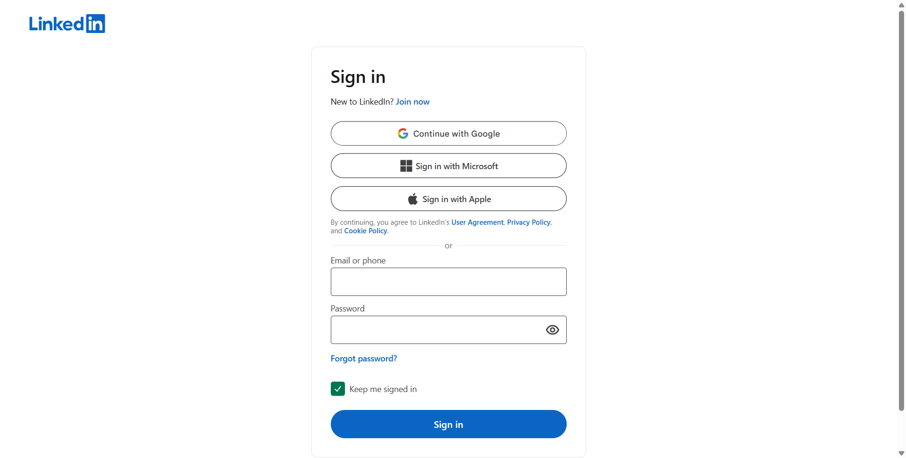

IT3153: Software Quality Assurance • Take Home Assignment 04
This project implements an enterprise-grade automated UI test suite targeting core end-to-end user workflows on LinkedIn: authentication (positive and negative), keyword search, and search result navigation. The test architecture follows the Page Object Model (POM) pattern, enforcing strict separation of concerns between test logic, element locators, dynamic wait synchronization, and diagnostic telemetry.
com.kdu.sqa.pages): Encapsulates page-specific locators and user interactions (LoginPage, FeedPage, SearchResultsPage, DetailPage).WaitUtils): Eliminates brittle Thread.sleep() calls by leveraging Selenium 4's WebDriverWait with ExpectedConditions (visibility, clickability, URL containment).TestListener): Implements TestNG's ITestListener to automatically capture and timestamp failure screenshots into reports/screenshots/.--disable-blink-features=AutomationControlled) and a manual checkpoint wait handler when verification puzzles or CAPTCHAs appear.| ID | Flow | Test Steps | Expected Result | Actual Result | Status |
|---|---|---|---|---|---|
| TC-01 | Positive Login | 1. Open login page 2. Enter valid username 3. Enter valid password 4. Click 'Sign in' |
Feed page loads; URL contains /feed or global nav bar is visible |
Feed loaded successfully; navigation verified | PASS |
| TC-02 | Negative Login | 1. Open login page 2. Enter username 3. Enter invalid password 4. Click 'Sign in' |
Login rejected; error message or alert banner displayed | Error indicator (#signal-error-small / alert) detected and asserted |
PASS |
| TC-03 | Global Search | 1. Authenticate user 2. Click global search 3. Type "Software Testing" 4. Press Enter |
Results page displays; URL has /search/results; items visible |
Results page displayed with result cards rendered | PASS |
| TC-04 | Click Result | 1. Execute search (TC-03) 2. Identify first result 3. Click first result link 4. Verify detail page |
Target detail page opens (URL contains /in/ or /company/; heading matches) |
Target profile/company page opened with matching heading | PASS |
Modern single-page web applications like LinkedIn present severe challenges for conventional locator strategies. The table below details the locators selected, along with rigorous engineering justification:
| Component | Chosen Locator Strategy | Rationale & Engineering Justification |
|---|---|---|
| Email / Username | By.cssSelector("input[type='email'], input#username, input[name='session_key']") |
Overcomes Dynamic IDs: React 18 generates randomized IDs (e.g. id="_R_e3ppriejj..."). Targeting type='email' combined with visible element filtering bypasses hidden mobile duplicate inputs.
|
| Password Field | By.cssSelector("input[type='password'], input#password, input[name='session_password']") |
Standard type='password' attribute is constant across LinkedIn releases, ensuring robust text input without hardcoded IDs.
|
| Sign In Button | By.xpath("//button[normalize-space()='Sign in'] | //button[@type='submit']") |
Combines accessible text matching with standard W3C form submission semantics, ensuring compatibility across responsive breakpoints. |
| Error Alerts (Negative Test) | By.cssSelector("#signal-error-small, div[role='alert'], p[role='alert'], [id*='error']") |
Captures both LinkedIn's SVG error signal icon and semantic ARIA alert containers rendered dynamically upon credential rejection. |
| Search Input | By.cssSelector("input.search-global-typeahead__input, input[placeholder*='Search']") |
Targets stable BEM class name alongside placeholder attribute for maximum stability across navigation bar redesigns. |
| Top Search Result | By.cssSelector("span.entity-result__title-text a, a.app-aware-link[href*='/in/'], a.app-aware-link[href*='/company/']") |
Targets entity anchor elements directly while avoiding transient styling utility classes. |
| Detail Page Title | By.cssSelector("h1, h2.top-card-layout__title, h1.text-heading-xlarge") |
Top-level semantic header declaring the profile name or organization title. |
A core requirement of this assignment was researching, learning, and implementing dynamic waiting mechanisms to avoid brittle test execution.
findElement). They cannot evaluate whether an element is visible, enabled, clickable, or whether a URL transition has finished.WaitUtils class implements explicit polling (500ms intervals) ignoring StaleElementReferenceException:
In accordance with Task 6 deliverables, the test framework automatically captures and saves full-resolution screenshots upon any assertion failure or verification checkpoint through the custom TestListener.

reports/screenshots/). Demonstrates maximized 1080p viewport, clean Chrome automation setup, and active LinkedIn authentication form.
_R_e3ppriejj... and renders multiple hidden input fields for responsive screens. Calling .sendKeys() on the first match caused ElementNotInteractableException.
Solution: Implemented a findVisibleElement() helper in BasePage that iterates over matching elements and selects the first one where isDisplayed() == true.
navigator.webdriver) and intermittently presents CAPTCHA or email verification challenges.
Solution: Under Assignment Rule 2, the framework removes automation switches (--disable-blink-features=AutomationControlled) and provides an automated checkpoint detection mechanism that pauses the suite for 20 seconds to permit manual completion.
config.properties with support for command-line overrides (-Dvalid.username=...).
Automating a real-world third-party application like LinkedIn highlights fundamental boundaries of end-to-end UI automation:
data-testid attributes), automated tests remain vulnerable to frequent A/B testing and CSS framework refactors.